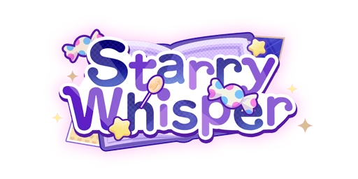
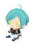
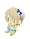

[...]
[...]
[...]
[...]
[...]
[...]
[...]
[...]
[...]
...
...
...
...
...
...
...
...
...
...
...
...
[...]
[...]
[...]
[...]
[...]
[...]
[...]
[...]
[...]
...
...
...
...
...
...
...
...
...
...
...
...
[...]
[...]
[...]
[...]
[...]
[...]
[...]
[...]
[...]
...
...
...
...
...
...
...
...
...
...
...
...
[...]
[...]
[...]
[...]
[...]
[...]
[...]
[...]
[...]
...
...
...
...
...
...
...
...
...
...
...
...
[...]
[...]
[...]
[...]
[...]
[...]
[...]
[...]
[...]
...
...
...
...
...
...
...
...
...
...
...
...
[...]
[...]
[...]
[...]
[...]
[...]
[...]
[...]
[...]
...
...
...
...
...
...
...
...
...
...
...
...
[...]
[...]
[...]
[...]
[...]
[...]
[...]
[...]
[...]
...
...
...
...
...
...
...
...
...
...
...
...

Starry Whisper[...]

Prelude:My dear guest, the shop isn't open just yet. Kekeke, pardon my joke. For my young lady, the door is always open.
I could hardly have imagined a dessert shop that opens solely at night... If another job like this comes along, be sure to let me know [music note]
A late-night dessert shop is already tempting eNOUGH... but paired with those dangerously charming pastry cheFS, it becomes a spell no one can breaK.
In this comic, the dessert shop appears to symbolize an irresistable temptation. Some, however, see it as the lone beacon of light in the night—and that is where the story truly begins.
What love and wonder shall unfold in a dessert shop so enchanting it lures souls into the night's embrace? Oh-ho, how sweet the anticipation~
It seems this story isn't only perfect for Brother Rei—Brother Shu and Brother Wataru look quite taken with it toO. Let me guesS... Brother Wataru enjoys the dessert-making part the mosT, righT?
Indeed! The ingredients of a dessert, chosen not by the chef but at the whim of the guest—what a delightful bit of whimsy! And yet... that's not even the most important part—
The most "important" part is... that we get to work together again~ I was so happy when I heard, I just agreed to join the "project" right away [music note]
Opportunities for all five of us to work together are rare. And this time, instead of stepping onto a stage, we portray characters from the comic. I hope our fans enjoy this new experience as well.
Don't forget the dessert shop collab is starting sooN. Brother Shu bakes croissants regularLY, righT? I'm looking foreward to your sweet creaTIONS.
Me too~ And I see we've got "sea salt" in the ingredients. I've always wanted to try a dessert that tasted just like the "ocean". Shu, will you "show" me how to make it?
And you're suggesting a tasting party will help us practice for the collab...? Non! Don't go along with their nonsense, girl.
Hahaha, I actually find the idea rather nice. No need to worry so much, Itsuki—just think of it as a practice run before we officially open.
The "timing" seems just right~ Let's start by greeting our guests at the door. Just saying "welcome" feels a bit "ordinary"
Worry not, for night has fallen—and now, step into the world of the "Starry Dessert"! One, two... Amazing[star]
"The final touch—top the dessert with a snowy sprinkle. Would you do the honors?"
"What mysteries this bottle holds? Frosting or sea salt? Fufufu~ My memory fails me [music note]"
"Unit it touches the tongue, none can say... Will it be bright sea salt lemon or sugary lemon bliss? How delightfully uncertain it is~"
"Just as none can know what tomorrow holds before the dawn, and such is the charm of life!"
"One thing alone is certain: when night falls, I shall be here, awaiting you as ever."
[fade to black]
Come now, [producer], as tonight's final guest, what sweet delight shall you request?
Hahaha, I should have known! Of course you'd bring me snacks on a surprise visit. How marvelously unforseen!
Ah, but you wouldn't have guessed, [producer]—I, too, had a sweet gift prepared just for you! Doesn't it feel like a story straight out of The Git of the Magi?
Fufufu, you've claimed the spotlight of surprise! We'll have to share both desserts~ I wonder what it feels like when their flavors blend...
I suppose it's a bit like us—producer and idol. Just as these flavors mingle into something new, we become something greater when we're together [music note]
"This clear blue pudding reminds me of the ocean... like it's been sealed in the glass~ It's so cool and refreshing just to look at it~"
"Though it's late at night, the summer heat still lingers... Did you come here looking for a bit of coolness~?"
"Then, please enjoy this ocean-and-jellyfish parfait, cool and refreshing for a summer treat [music note]"
"Haha~ Isn't the cool combination of pudding with mint chocolate ice cream just perfect? You've got that surprised look on your face [music note]"
"Mm~ Carry this cheerful spirit as you embrace the final days of summer, and enjoy the last fireworks of your holiday~ Then come back and tell me all about your day [music note]"
[fade to black]
Yep~ It may be a "dessert shop," but we still need a touch of "sea salt" too~
That salty, "sea breeze-like" taste feels so familiar~ The "balance" between sweet and salty is just lovely...[music note]
What do you think, [producer]~ Should AOUMI Aquarium start offering some sweets as "souvenirs" or "gifts"?
Something like "shell-shaped chocolate" or "sea salt ice cream" might be "perfect"~ After all, "aquariums" are supposed to be perfect "date" spots.
Anyway~ Next time you visit, [producer], the Aquarium will surely have lots of new surprises~ Be sure to let me give you a proper "tour" [music note]
"Welcome, traveler. Have you lost your way beneath the cloak of night? Or perhaps one who revels in its beauty?"
"This dessert is made solely for you. Its rich violet hue, sprinkled with shimmering sugar, mirrors the mystery of a starry night."
"May tonight have brough you delight, for I find myself already longing for our next encounter [music note]"
"Ah, and should you one day find yourself here in a dream, or should I visit your slumber... do not let it startle you—"
"You see, you are someone the night calls to... just as I, too, belong to its quiet depths."
[fade to black]
Kekeke, it truly is a delight to spend this serene night in the company of everyone...[music note]
I even tried making a vampire-themed dessert with strawberry jam, paired with a special tomato blend. Its sweet-and-sour freshness goes perfectly with the summer night breeze.
Though I expect only a few scenes will be filmed at night, I shall cherish these moments while they last.
Thank you for keeping me company so late. Might I have the honor of escorting you home later?
This night holds many a tale I wish to tell you, young lady... and it would please me greatly to share them as I see you safely home [music note]
"Hold the piping bag. I shall only explain this once."
"Though, the cookie base is already done; a touch of imperfect icing won't alter the taste, so long as you're fine with it while eating."
"If one cookie fails, eat it and move on to the next. So long as you're in control, there's nothing worth sulking over."
"Now then, here are some chocolate decorations, sugar sprinkles, and gold leaf— do feel free to decorate as you wish."
"Now that I've shown you how it's done, if you happen to be alone this Christmas... come make the gingerbread house with me."
[fade to black]
I've visited quite a few cafés for BLEND+ research, so I have gained my share of insight. Even so, stepping in this time as both pâtissier and shop staff has brought its own new challenges.
I'm cast as a dessert artisan, so I'm not settling for anything less than perfect. Simply perfecting the icing designs on the cookies took quite some effort.
...Yes, what you see here are all my practice pieces. As I become more adept with the piping bag, I even found a certain pleasure in it.
Hmm... So you're saying these practice pieces bring a certain intimacy that perfect works cannot?
Well, if it's you asking, then take as many as you wish.
"Hold oN, you can't eat it yeT—there's still one last thing to dO—"
"HahA, you seem a little nervOUS. Don't worRY, we're simply enchanting this treat with tasty magIC [music note]"
"AlRIGHT—take my hanD, close your eyES, and repeat after mE: 'Abracadabra, bibbidi-bobbidi-boo~'"
"Do you remember the first thing I told yoU? Those who walk through this door carry a hidDEN, burning deSIRE..."
"The ritual is now comPLETE. One bite of this desSERT, and the moment you've been longing for shall unFOLD. But whether you seize iT... that's up to yoU [star]"
[fade to black]
What a curious little face you're makING Kitten. Are you hiding some fun from mE, perHAPS?
You think I'm acting a little dramatic just noW? WelL, that's faiR—every dessert chef in this comic has their own quirky charM.
Delicious magic isn't reserved for cafés aLONE, you knoW. If you like iT, how about I cast a little real magic on your treaT?
Come oN, take my hand and close your eyES—
HahA, I meant to surprise yoU, but you saw right through mE. That's righT—this little treat is a gift just for my Kitten. Go oN, take iT~[music note]
Good morning, Lady [producer]! What a beautiful morning. It is nice to see such clear skies for a change.
April's weather is really pleasant--perfect for a walk before work and a bit of sunshine.
Indeed.
Spring is the season when everything begins to stir.
The trees are putting forth new buds, and even the birds and insects seem more energetic than before.
When I train in the morning, it almost feels as though the whole world is waking alongside me.
Haha, that's spring for you~
As it happens, I know a traditional confectionary that serves excellent sakura mochi.
I hear they have begun offering several new spring specialities as well.
If you're interested, Lady [producer], how about we stop by after work someday?
Hmm, I didn't expect to be chosen for Spotlight Time again so soon.
It's not my first time, yet I still feel nervous.
Indeed.
Besides the episode I did with Sir Adonis, Sir Kiryu's Spotlight Time left quite an impression on me.
Whenever I watch the show, I try to imagine how I'd respond in their place.
I think Sir Kiryu handled it perfectly.
Based on previous episodes, perhaps the fans would like to see a different side of me, or maybe something I'm skilled at...
No, I can't say for certain.
Anyway, whatever the request may be, I shall give it my all. That's what matters!
Hmm, what's this? Candy to calm my nerves...?
Thank you.
I did not expect to recieve sweets from you first, Lady [producer], but I shall gladly accept them.
Haha, the sweet taste brought a smile to my face the moment I tried it.
You always have excellent taste, Lady [producer].
Before I knew it, my attention had shifted entirely to the sweetness, and my nervousness faded away...[music note]
I usually begin by collecting myself.
If circumstances permit, I may practice a few sword swings as well.
No matter what is happening around me, focusing on something familiar and keeping my own rhythm helps settle my mind.
ALKALOID visits Paris to check out an event while enjoying their vacation. However, they're forced to change their accomodation due to an unexpected issue, and end up staying at Aira's grandparents' house. Aira himself doesn't seem very enthusiastic about it...

A Noble Outing:[producer]! Do you mind if I brag a little...[music note]
I happened to bump into Himemiya on the way home from work the other day... And since we both had some time, we ended up hanging out for a bit.
We went to a stylish café and one of Himemiya's favorite stores. It was so much fun [music note]
It was a super high-end café that Tenshouin told us about!
I bet if I were alone, I'd be too nervous to even go inside. Himemiya even treated me to some delicious cake.
Having tea there really made me feel like an aristocrat.
Things like work pouches and accessories, you know?
Himemiya askes me to pick out some accessories for him. I just couldn't make up my mind.
I mean, this is fine we're talking about?! That's a lot of pressure on me...!
Then, Himemiya even asked if I'd like to go to his place sometime!
Uh, I'm getting nervous just thinking about it... Himemiya's place must be huge, right?
What kind of gift should I bring?
I'm not so sure... "Anything" doesn't really make it easier to decide.
Maybe I could bring some of my favorite sweets? Or something that's popular?
Hmm~ Maybe I should ask the other Sweets Fan Club members?
Black tea? You're right. I remember Himemiya ordered black tea when we were at the café...!
I'll go ask Tenshouin and Shino what kind of tea they'd recomment [music note]
Thank you, [producer]. That's one less thing to worry about [music note]
You've been to Himemiya's house before, [producer]?! Aww~ Why didn't you say so?
...You went there for work, not for fun? You mean your work as a producer?
As a housekeeper...? Huh... What are you talking about...?
Is it related to your family situation... maybe financially? I didn't realize that was something people did part-time.
I'd like to work as Himemiya's housekeeper if I can! Their way of life is like a whole different world to me. I just know I'd be amazed.
Ah, I feel like Fushimi would get mad at me if I did that, though... I'm no good at housework and stuff like that, you know?
I don't really get it, but it sounds quite intense for a part-time job.
You made a lot of mistakes? Hm, I would never expect that from you!
Himemiya taught you the basics of being a servant...? What? You have to tell me more about that!
Ehehe, finally, Paris...[music note]
I'm so excited...[music note]
Just think. Last spring, our unit hadn't even formed yet, and I was barely working as an idol, right...?
And I was constantly doing part-time jobs to fund my otaku activities.
The fact that I'm able to travel with my unit now feels like a dream come true!
I can't!
We still have some time before we leave, so I need to get everything ready...[music note]
I want a new backpack for the trip, and I need to read through the travel guide.
Oh, I should look up some travel tips on social media.
Ehehe, there's so much I want to do...[music note]
We haven't decided yet.
I'm going to meet up with the other ALKALOID members to discuss it in a bit!
If we're going all the way to Paris, I'd like to do things we can't do in Japan...
I just couldn't make up my mind.
So I'll need to look into what it's like there first.
If you have any recommendations, [producer], please let me know!
Do you know what a "vlog" is, [producer]?
Yeah, that's right!
It's a video blog.
Loads of idols are sharing videos of what they're doing nowadays, right?
Sometimes, I watch other idols' videos, but filming a vlog myself is a whole different story...!
Hm?
Just seeing ALKALOID in the video already makes you happy...?
Come on, you're just saying that because you're biased, right, [producer]?
Or maybe it's because Hiro is always talking nonsense?
Ah, I guess Mayo and Tattsun are pretty entertaining, too.
I can't tell if they just have great chemistry or if it's something else...[music note]
That's right!
Actually, I'm worried about whether we'll get enough good content...!
I feel like just chatting in the video might not meet fans' expectations.
I wonder if there's anything only we could do...?
Maybe we'll run into some trouble while traveling...?
That would make for pretty good content.
—Oh, right.
I'd like to practice filming vlogs before we leave...
Could you help me with it, [producer]?
It really helps to get feedback from a professional producer...!
What do you think, will you help me out...?
Hooray~ [music note]
I can't wait to get started...[music note]
I've actually got Keito Lecture today, so would you mind if I invited everyone else?
Hasumi was saying that he didn't know what we should do today, so this might just be perfect!
Eh?
You've got proper filming equipment?
I feel bad for putting you through so much trouble...
...The ES phones have high-quality cameras?
Ahaha, you're right, quality surely is important [music note]
Thank you, [producer]...[music note]
Uhh, I didn't think you would find me here, [producer].
I was just staring at this plushie.
That must be disturbing...
I-I'm not doing anything suspicious!
Please don't report me!
Well, I'm not just staring at this plushie because I like cute things...
I recently had a chance to handle a variety of plushies.
And I was just looking at it and realized how many different kinds and styles there were.
That's all it was...
S-sorry...
It's not that I don't trust you, [producer].
It's just the other day, when I was examining diorama items in a toy store, I felt like a security guard walked past me several times...
I thought that they might think I was suspicious, and that's why I got a little worried just now...
You see, I was invited to join a Pretty 5 event recently...
It wasn't just Aira who was there at the time--Narukami and Kagehira were there too.
I think they invited me out of kindness since I didn't have anything to do.
And the event that day was about showing everyone all sorts of plushies.
It was so relaxing... [music note]
Some were based on animals, and some were strange creatures.
There were all kinds of them.
I think Narukami's was designed by a famous fashion designer or something, and it was very stylish...
Kagehira's was... it was a strange creature that's hard to describe.
Apparently he designed it himself.
That's right [music note]
It was such a lovely event, perfectly fitting the name Pretty 5.
But...
when they asked me to share my thoughts on their plushies, I was so worried about using the wrong words.
In the end, Aira ended up speaking on my behalf most of the time.
I'm so pathetic...
I'm not part of the group, but they asked me to decide what they should do for their next event.
I thought they were joking, so I tried to brush it off in the moment...
But looking back now, they all had rather sincere expressions in their eyes.
What kind of event do you think would be good, [producer]?
Hehe.
Pretty 5 members would look good in anything they tried on.
It's going to be a glamorous event.
They could do a whole fashion show or something...[music note]
I think they'd shine so brightly that I'd just have to watch them from the sidelines.
Either way, I'd love to see Aira trying on some cute outfits...[music note]
That's a good idea.
Mashiro was saying that there is an event at a famous theme park about mascots.
He said he was going to check it out with the other Ra*bits members as a reference for work.
That would be perfect for Pretty 5. Maybe I should recommend it to them...?
At ES's MATRIX event, ALKALOID and Crazy:B are set for a direct showdown. To turn up the hype, Hiiro and Rinne will swap leadership of their units for a clash of champions.
Oh, [producer].
I was just looking or the members of Crazy:B...
Looks like nobody's in the agency.
Where can they be?
Are they working right now, or are they at ES...?
Yep. They always hang out at Cinnamon!
Shiina says they never order anything but water...
Is the water there really that good?
Hm, thanks!
Saegusa was the only one at the agency.
I wasn't sure if I should bother him.
"No schedule"...?
Hmm.
Maybe they're taking a break somewhere.
You saw them in the ES corridor just now?
Then they're probably still in the building.
I'll try contacting my brother, too.
You're wondering why I'm looking for Crazy:B?
I have something I'd like to discuss with them...
But there's a leaders' meeting at STAR PRO at noon, right?
I'll wait until that wraps up and talk to them afterward.
Don't worry.
I just came to say hi.
I can go on my own.
Sorry if I made you worry.
It's nothing serious!
Oh, I heard you're handling the outfits this time, [producer].
I'm counting on you [music note]
It seems they're using something called a "dragon boat"...
What's that?
They're probably in the staff cafeteria or at Cinnamon!
Shiina should be on shift right now.
I'll go check on him!
...
...
...
...
...
...
...
...
...
...
...
...
[...]
[...]
[...]
[...]
[...]
[...]
[...]
[...]
[...]
...
...
...
...
...
...
...
...
...
...
...
...